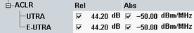

The adjacent channel leakage power ratio (ACLR) limits complement the spectrum emission mask.
3GPP defines relative and absolute limits for several types of adjacent channel carriers. The less stringent limit applies. The test must be performed with test models E-TM1.1 and E-TM1.2 at maximum output power.
You can set the limits in the configuration dialog, depending on the channel bandwidth.

The ACLR is defined as mean power in the assigned E-UTRA channel divided by the mean power in an adjacent channel. It must be greater than the relative limit.
The mean power in an adjacent channel must be smaller than the absolute limit. The absolute limit is defined in dBm per MHz bandwidth of the adjacent channel.
According to 3GPP, the limits must be checked for first and second adjacent channels. The relevant adjacent channel types depend on the duplex mode and the channel bandwidth as listed in the following table.
E-UTRA | UTRA 1.28 MHz | UTRA 3.84 MHz | UTRA 7.68 MHz | |
|---|---|---|---|---|
FDD, any channel BW | X | X | ||
TDD 1.4 MHz and 3 MHz | X | X | ||
TDD 5, 10, 15, 20 MHz | X | X | X | X |
The following table provides an overview of the relative and absolute limit values defined by 3GPP. The default values correspond to the requirements for a home BS.